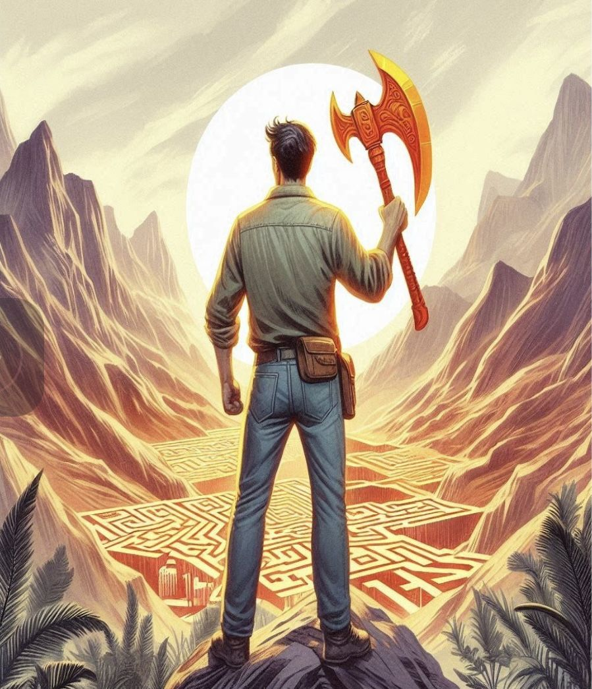
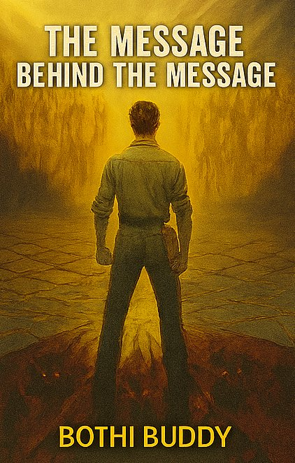
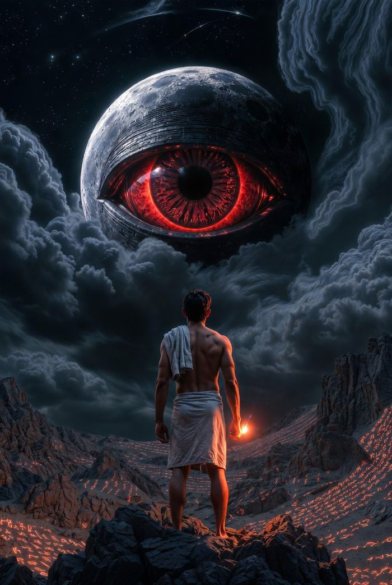
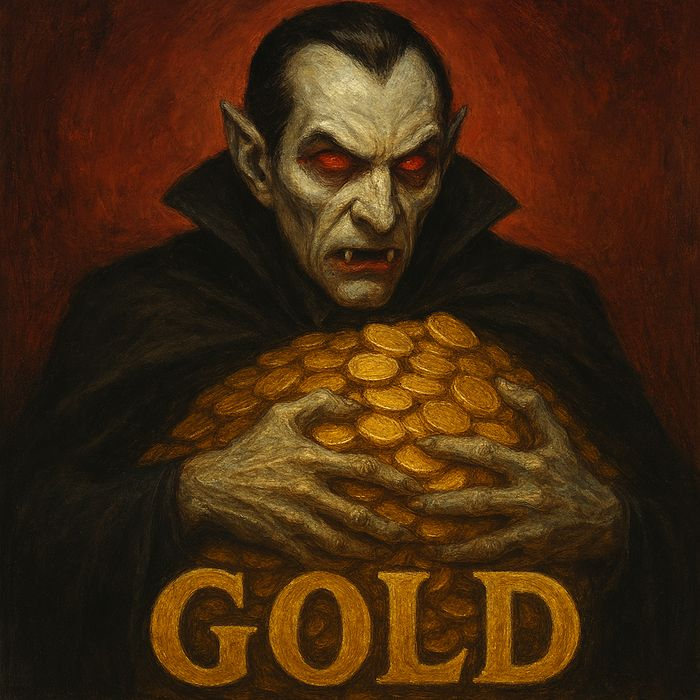
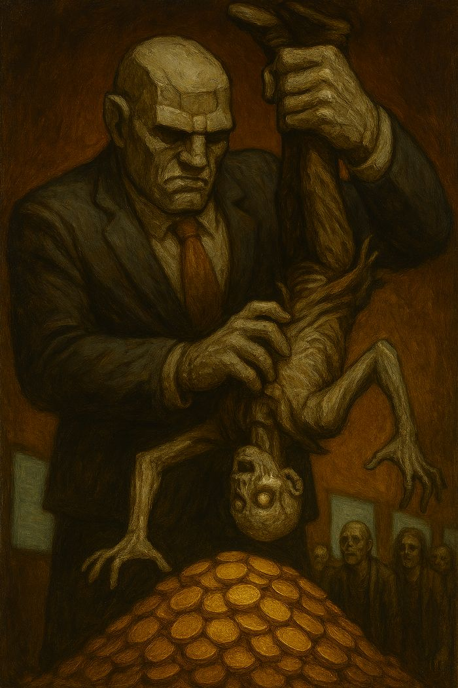
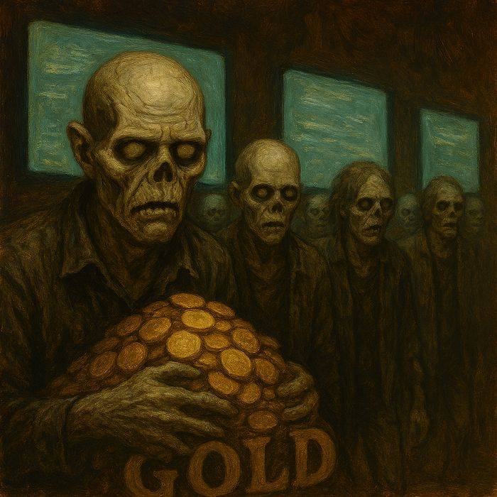
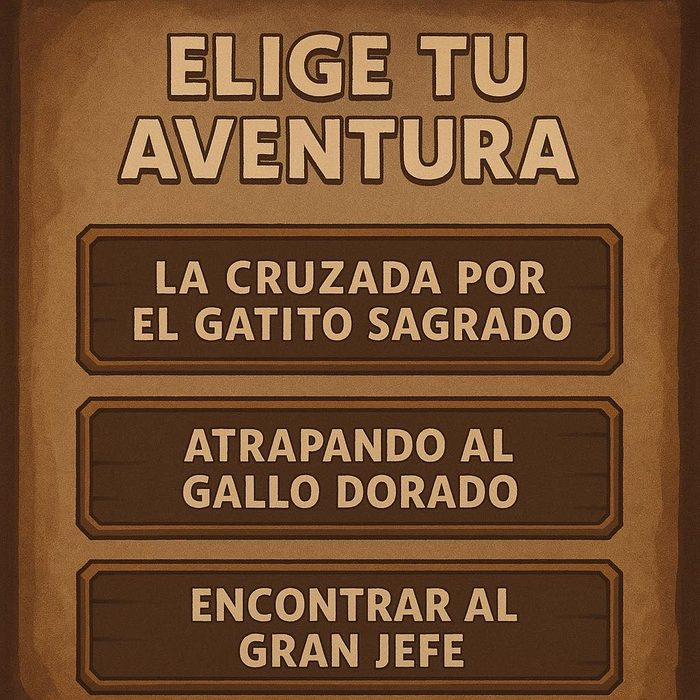
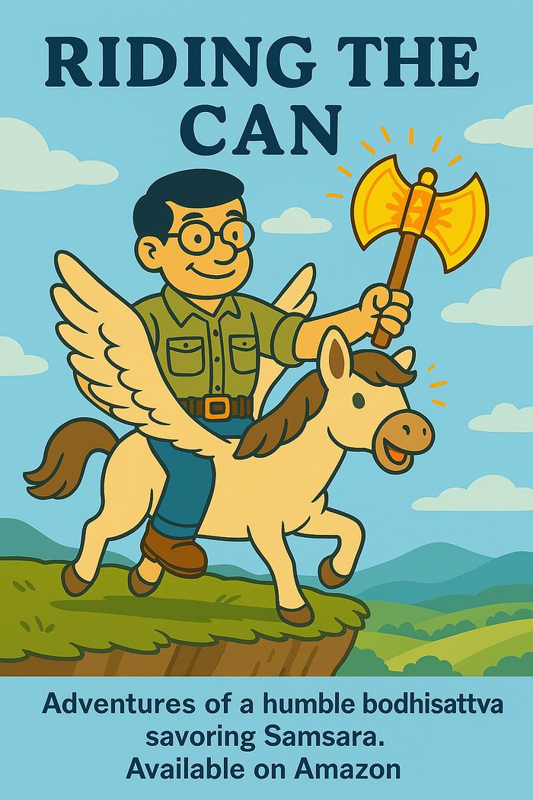
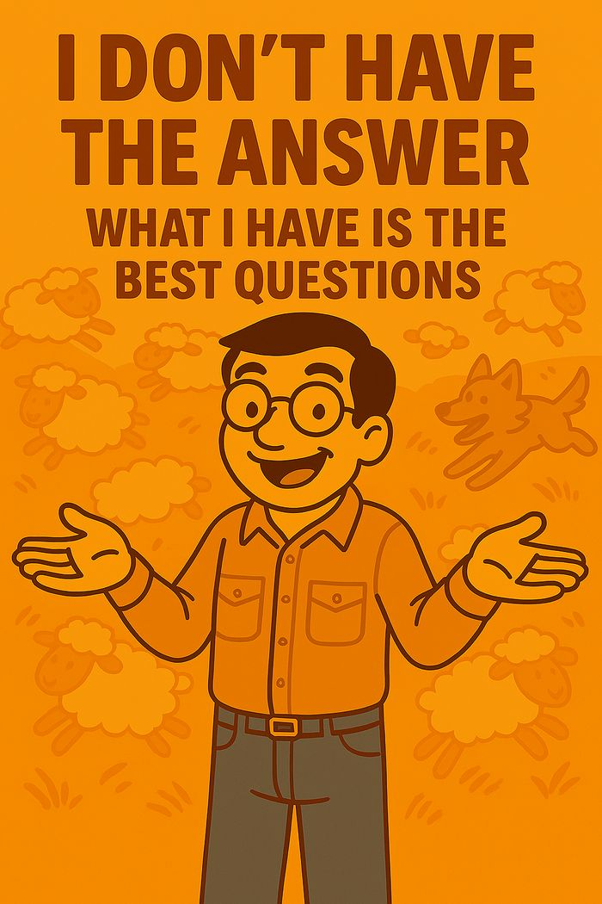

Guías y PalancasGuides & Levers
¿Por qué hacemos lo que hacemos?Why do we do what we do?
Aventuras de un Humilde Bodhisattva Saboreando a Samsara · Vol. 1Adventures of a Humble Bodhisattva Savoring Samsara · Vol. 1
Un audiolibro-juego de rol para cualquiera que carga con sus tengo, sus debo y sus necesito. Cruzas desiertos, montañas y valles, recoges herramientas y, al final, subes al trono de tus propias decisiones. No es para quien ya tiene todo resuelto. Es para choferes, lavacoches, montacarguistas y cualquiera que quiera usar la espada de la claridad. An audiobook role-playing game for anyone carrying their must-haves, their shoulds and their needs. You cross deserts, mountains and valleys, collect tools along the way, and finally take the throne of your own decisions. It's not for people who have everything figured out. It's for drivers, car washers, forklift operators, and anyone ready to pick up the sword of clarity.

La libertad es sagrada, la responsabilidad absoluta.Freedom is sacred, responsibility is absolute.
Cuatro voces, un narradorFour voices, one narrator
El libro te habla en cuatro registros. En el audiolibro de esta edición, cada uno tiene su propia voz.The book speaks to you in four registers. In this edition's audiobook, each one gets its own voice.
[[Bothi]]
Bothi
El guía. Enseña, define, cuenta la leyenda del mapa.The guide. Teaches, defines, tells the lore of the map.
[[Buddy]]
Buddy
El compa. Las anécdotas, las deudas, el diario, los comentarios al margen.The buddy. The stories, the debts, the journal, the asides.
[[Body]]
Body
El cuerpo. Los ejercicios: detente, siéntelo, escucha lo que te dice.The body. The exercises: stop, feel it, listen to what it says.
[[Both I]]
Both I
Tú y yo a la vez. Cuando el lector y el narrador preguntan juntos.You and me at once. When reader and narrator ask together.
El mapaThe map
Siete territorios, un verbo cada uno. Se recorren en orden.Seven territories, one verb each. You walk them in order.
- 01El DesiertoThe DeserttengoI must
Lo que de verdad tienes que tener para sobrevivir.What you truly must have to survive.
- 02Las MontañasThe MountainsdeboI should
Los deberes que cargas y quién te los puso.The duties you carry and who put them there.
- 03El ValleThe ValleynecesitoI need
Las necesidades, los borregos y Chucho, el antipastor.Needs, the sheep, and Chucho, the anti-shepherd.
- 04El AcantiladoThe CliffpuedoI can
Con la espada de luz en la mano, lo que sí puedes.Sword of light in hand, what you actually can.
- 05El LaberintoThe LabyrinthquieroI want
Los quiero con alas, el Ferrari rojo y los no-quiero.The winged wants, the red Ferrari, and the don't-wants.
- 06El CaminoThe PathelijoI choose
El arcángel de la elección. Eliges incluso cuando no eliges.The archangel of choice. You choose even when you don't.
- 07El TronoThe ThronedecidoI decide
El Gran Jefe. Las decisiones como guías, no como cadenas.The Big Boss. Decisions as guides, not chains.
Cómo leerlo (o escucharlo)How to read it (or hear it)
Kindle
En Amazon, una edición en español y otra en inglés.On Amazon, one edition in Spanish and one in English.
Español → English →AudiolibroAudiobook
Narrado a cuatro voces, en inglés y en español. El formato para el que fue escrito.Narrated in four voices, in English and Spanish. The format it was written for.
EPUB
Para leer en cualquier lector, sin depender de una sola tienda.For any e-reader, without depending on one store.
Libro impresoPaperback
Con códigos QR que te traen de vuelta aquí, al soundtrack.With QR codes that bring you back here, to the soundtrack.
Soundtrack
Las canciones que el libro cita. El libro enlaza a esta página y no directo a las plataformas, para que los enlaces sigan vivos.The songs the book cites. The book links to this page, not straight to the platforms, so the links stay alive.
La aventura continúaThe adventure continues
Guías y PalancasGuides & Levers
Un safari en solitario por tus tengo, debo, necesito y quiero.A solo safari through your musts, shoulds, needs and wants.

El Mensaje Detrás del MensajeThe Message Behind the Message
Ahora es una partida. Golems, vampiros y la Pradera de las Ideas Absurdas. Solo para valientes.Now it's a party. Golems, vampires and the Meadow of Absurd Ideas. For the brave only.

Karmagedon
Consecuencias y el nuevo mundo. Un álbum, una novela, un sofón llamado Zhizi.Consequences and the new world. An album, a novel, a sophon named Zhizi.
Escapando de Nunca JamásEscaping Neverland
"Seré feliz cuando…" El país donde todos están y nadie puede estar."I'll be happy when…" The country everyone is in and no one can be.
Bestiario de MDMThe MDM bestiary
Lo que te espera en el segundo libro. Ninguno sabe que es un monstruo.What waits for you in the second book. None of them know they're monsters.

El VampiroThe Vampire
Se beneficia sin pagar consecuencias. A veces a propósito, a veces por inercia.Profits without paying consequences. Sometimes on purpose, sometimes by inertia.

El GólemThe Golem
Empresa, gobierno, ideología: un ente sin alma animado por un papel y un rito legal.Company, government, ideology: a soulless thing animated by a role and a legal rite.

Los ZombisThe Zombies
Repiten la narrativa de la pantalla y reaccionan cuando se les cae.They repeat the story on the screen and lash out when it falls apart.
Memes
Para compartir con quien siga atorado en el desierto.To share with anyone still stuck in the desert.



Apoya la aventuraSupport the adventure
Escribo entre viajes de Uber, turnos de reparto y autos por lavar. No necesito el pescado. Una buena caña de pescar sí ayuda.I write between Uber rides, delivery shifts and cars to wash. I don't need the fish. A good fishing pole does help.
QuieroWants
- Un agente literario y una editorial con agallasA literary agent and a kick-ass publisher
- Terminar el audiolibroFinish the audiobook
- Escribir y enseñar de tiempo completoWrite and teach full time
ElijoI choose
Cada día, cada momento: la libertad de escribir y enseñar mientras cuido a mis hijos.Every day, every moment: the liberty to write and teach while taking care of my kids.
La forma más directaThe most direct way
Gratis y mueve el algoritmoFree, and it moves the algorithm
Un café por capítuloA coffee per chapter
Acompaña la escritura de MDMFollow MDM as it's written
Con quien esté atorado en el desiertoWith someone stuck in the desert
Cognitive Friction Fellowship
La parte académica del proyecto: papers sobre decisión, sesgo y agencia, escritos entre un humano y una tribu de IAs. Fricción intelectual antes que halagos.The academic side of the project: working papers on decision, bias and agency, written by one human with a tribe of AIs. Intellectual friction over flattery.
EscríbemeWrite to me
Desde Houston, Texas. Lectores, editoriales, agentes y aventureros perdidos.From Houston, Texas. Readers, publishers, agents and lost adventurers.
cuantic.coach@gmail.com